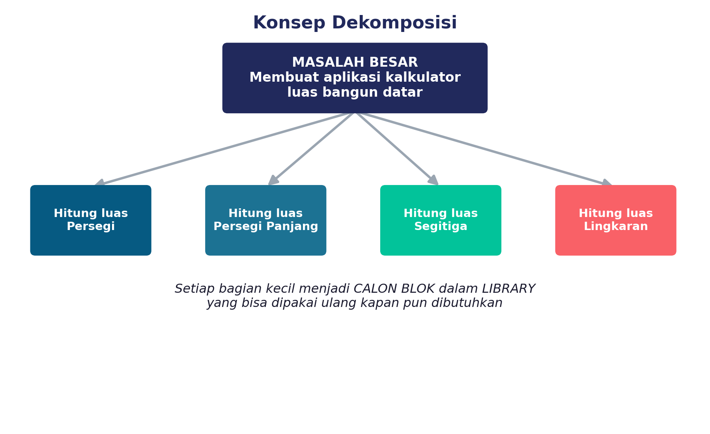
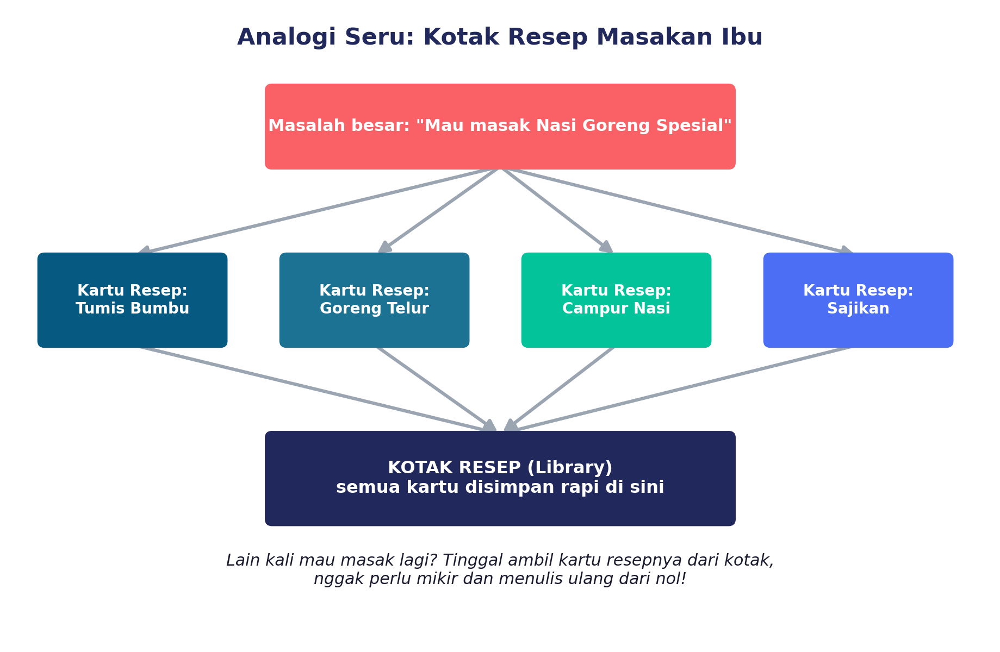
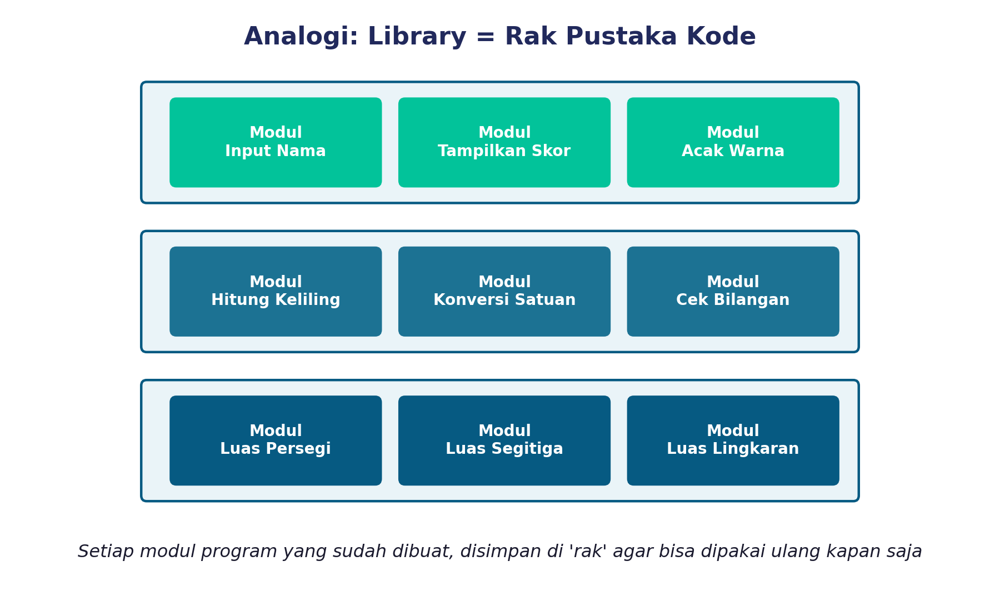
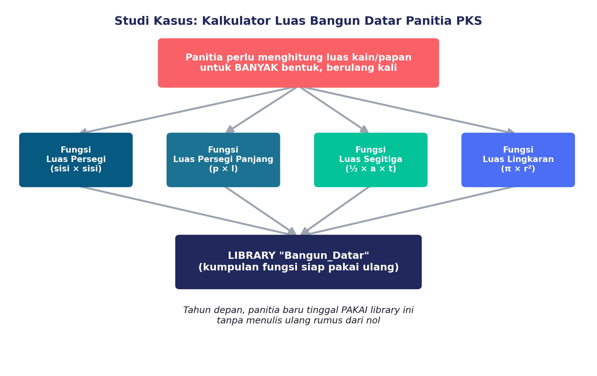

Bayangin kamu jadi panitia Pekan Kreativitas Siswa (PKS) di sekolah. Setiap tahun, panitia harus menghitung berapa luas kain atau papan yang dibutuhkan untuk bikin banner, pajangan, dan dekorasi — bentuknya macam-macam: ada yang persegi, persegi panjang, segitiga, sampai lingkaran.
Masalahnya, setiap kali butuh hitung luas, panitia harus nulis ulang rumusnya dari nol. Capek, kan? Lama-lama jadi berantakan dan gampang salah hitung.
Nah, di sinilah dua ide keren dalam pemrograman bisa nolongin kita: DEKOMPOSISI dan LIBRARY. Yuk, kita bahas satu-satu!
Apa Itu Dekomposisi?
Dekomposisi itu sederhana banget: memecah masalah besar dan rumit menjadi bagian-bagian kecil yang lebih gampang dikerjakan satu per satu.
Contoh masalah besar tadi — "bikin aplikasi kalkulator luas bangun datar" — bisa dipecah jadi beberapa bagian kecil:
- Bagian yang menghitung luas persegi
- Bagian yang menghitung luas persegi panjang
- Bagian yang menghitung luas segitiga
- Bagian yang menghitung luas lingkaran

Terus, Apa Hubungannya sama Library?
Setiap bagian kecil hasil dekomposisi tadi, kalau kita simpan dengan rapi supaya bisa dipakai lagi kapan pun butuh, kumpulannya itu yang disebut LIBRARY (artinya "pustaka").
Coba bayangin gini: kamu nggak perlu nulis ulang "rumus luas segitiga" setiap kali bikin program baru. Kamu tinggal ambil dari library, langsung pakai. Praktis banget, kan?


Tiga Alasan Programmer Suka Library
Reusability
Kode yang sudah kamu buat bisa dipakai berkali-kali, kapan saja dibutuhkan, tanpa nulis ulang.
Abstraction
Kamu cukup "panggil" bloknya aja, nggak perlu pusing mikirin detail rumit di baliknya.
Efficiency
Karena pakai kode yang udah teruji, program jadi lebih cepat selesai dan lebih kecil kemungkinan errornya.
Contohnya di Scratch, blok seperti move 10 steps atau repeat 10 itu sebenarnya bagian dari library bawaan Scratch. Di Blockly juga ada kategori logika, loop, matematika, teks, dan variabel yang siap kamu pakai.
Studi Kasus: Kalkulator Luas Bangun Datar

Sekarang giliran kamu! Bareng kelompokmu, coba pikirin:
- Kalau kamu mau bikin "Kalkulator Luas Bangun Datar" pakai Scratch/Blockly, bagian-bagian kecil apa aja yang perlu kamu buat?
- Dari bagian-bagian kecil itu, mana yang menurutmu paling sering bakal dipakai ulang di program lain?
- Kalau semua bagian kecil itu udah jadi, kira-kira kamu bakal kasih nama apa buat "library"-nya?
Tulis jawabanmu di LKPD yang dibagikan gurumu, ya!
Kuis Interaktif
1. Manakah dari berikut ini yang BUKAN termasuk 4 fondasi berpikir komputasional?
2. Langkah PERTAMA yang paling tepat sebelum membangun sebuah library adalah...
3. Kalau kamu ingin membuat aplikasi "Jadwal Pelajaran Digital", sebutkan 2 bagian kecil (hasil dekomposisi) yang perlu kamu buat!
Rangkuman Kilat
- Dekomposisi = memecah masalah besar jadi bagian-bagian kecil yang lebih mudah dikerjakan.
- Library = kumpulan modul/blok program yang sudah jadi dan bisa dipakai ulang.
- Dekomposisi adalah langkah awal sebelum kita bisa membangun sebuah library.
- Library itu penting karena reusability, abstraction, dan efficiency.
Refleksi Diri
Sebelum lanjut ke materi berikutnya, coba jawab dulu: